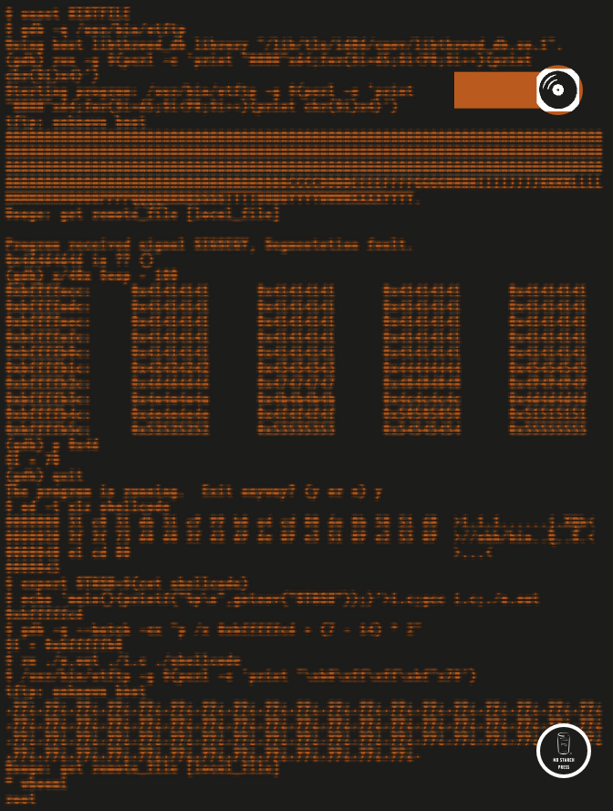

Next >
cD insiDe
2nd Edition
Hacking
the art of exploitation
jon erickson

PRAISE FOR THE FIRST EDITION OFSan FranciscoB R I E F C O N T E N T SC O N T E N T S I N D E T A I L PR EF A C EThe goal of this book is to share the art of hacking with everyone. Understanding hacking techniques is often difficult, since it requires both breadth andAC K N O W L E D G ME NTS I would like to thank Bill Pollock and everyone else at No Starch Press for making this book a possibility and allowing me to have so much creative control in the0x100IN TRO D UC TIO NThe idea of hacking may conjure stylized images of electronic vandalism, espionage, dyed hair, and body piercings. Most people associate hacking with breaking the law and assume that everyone who engages in hack- ing activities is a criminal. Granted, there are people out0x200PR O G R A M M ING Hacker is a term for both those who write code and those who exploit it. Even though these two groups of hackers have different end goals, both groups use similar problem-solving techniques. Since an understanding of programming helps those who exploit, and an under- standing of exploitation helps those who program, many0x300EX PLO I T A T I ON Program exploitation is a staple of hacking. As demon- strated in the previous chapter, a program is made up of a complex set of rules following a certain execution flow that ultimately tells the computer what to do.0x400NE T W ORK I NG Communication and language have greatly enhanced the abilities of the human race. By using a common language, humans are able to transfer knowledge, coordinate actions, and share experiences. Similarly,0x500S H E LLC O D ESo far, the shellcode used in our exploits has been just a string of copied and pasted bytes. We have seen standard shell-spawning shellcode for local exploits and port-binding shellcode for remote ones. Shellcode0x600CO UN T E RM E A S U RE SThe golden poison dart frog secretes an extremely toxic poison—one frog can emit enough to kill 10 adult humans. The only reason these frogs have such an amazingly powerful defense is that a certain species of snake kept eating them and developing a resistance.0x700CRY P TOL O G YCryptology is defined as the study of cryptography or cryptanalysis. Cryptography is simply the process of com- municating secretly through the use of ciphers, and cryptanalysis is the process of cracking or deciphering0x800CON C LU S I ON Hacking tends to be a misunderstood topic, and the media likes to sensationalize, which only exacerbates this condition. Changes in terminology have been mostly ineffective—what’s needed is a change inI N D E XSymbols & NumbersABCDEFGHIJKLMNOPQRSTUVWXZDefending Freedom in the Digital WorldThe Electronic Frontie un Defends Your Rights!SILENCE ON THE WIREA Field Guide to Passive Reconnaissance and Indirect AttacksSECURITY DATA VISUALIZATIONGraphical Techniques for Network AnalysisLINUX FIREWALLSAttack Detection and Response with iptables, psad, and fwsnortTHE ART OF ASSEMBLY LANGUAGETHE TCP/IP GUIDEA Comprehensive, Illustrated Internet Protocols ReferenceUPD A T E SAB O U T THE CD
Next >